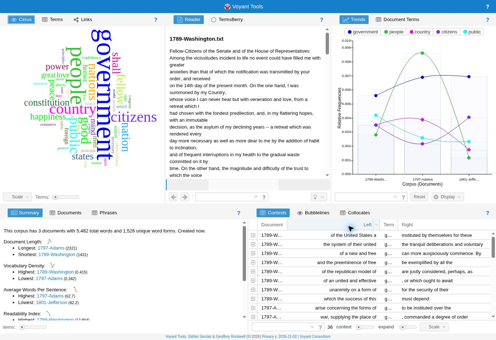
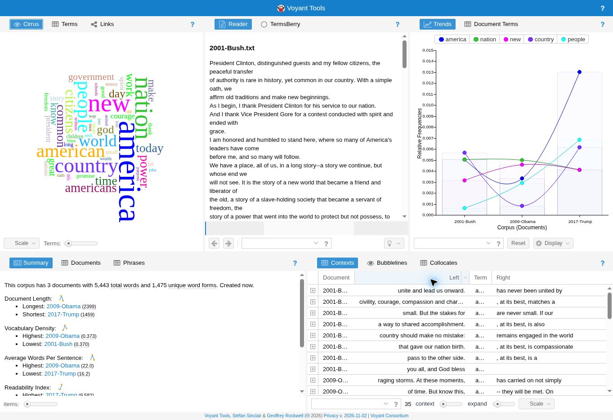
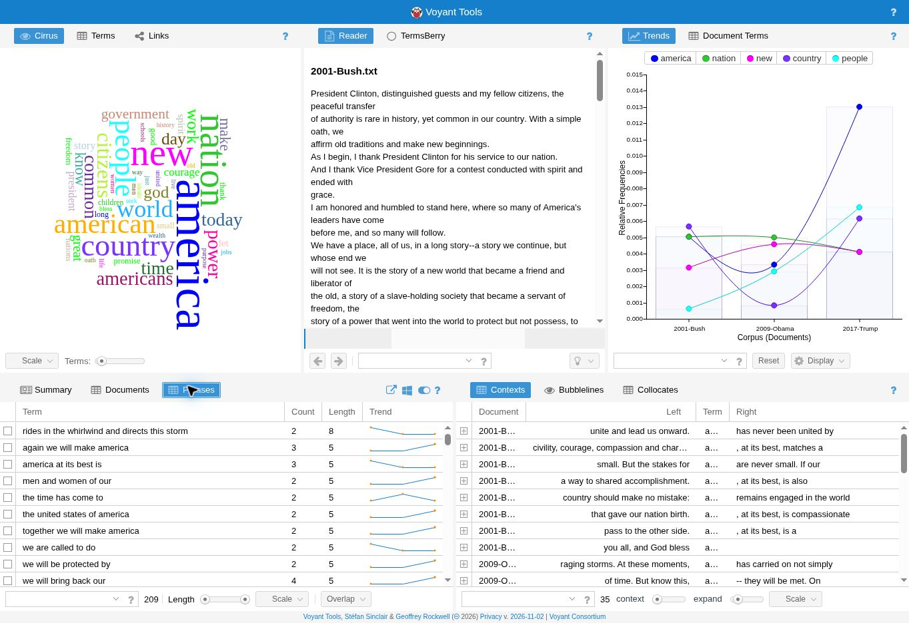

Mark Chamberlain | DIGIT 100 | Work in progress
This project compares the first inaugural speeches of three early presidents with those of three modern presidents. An inaugural speech is the speech a president gives when starting a term. I want to see which words and repeated phrases are common in each group and how the language is different.
The texts come from our class text collection. They are organized into early and modern folders in my text lab on GitHub, outside the docs folder.

Government is the most frequent word after Voyant removes common words. It appears 36 times. People appears 26 times, and country and citizens each appear 17 times. This suggests that the form of government and its relationship to citizens are useful topics to explore. A word count alone does not explain what a president means, so the surrounding sentences matter too.

America appears 35 times, nation appears 26 times, and new appears 22 times. Country appears 20 times and people appears 18 times. Compared with the early word cloud, these words suggest a possible focus on national identity and change. Both groups still talk about people and the country.
The groups are close in total length, which makes their raw counts easier to compare. However, there are only three speeches in each group. These results do not represent every president or prove that all older and newer speeches are different.
An n-gram is a group of words that appear together. A three-word phrase is a 3-gram. This preliminary table counts selected 3-grams in the saved text files. The counts were calculated separately from Voyant: letters are lowercased, punctuation separates words, apostrophes inside words are kept, and phrases never cross from one speech into another. Common words are kept for this comparison.
| Three-word phrase | Early group | Modern group |
|---|---|---|
| of the people | 8 | 0 |
| my fellow citizens | 4 | 2 |
| and we will | 0 | 8 |
| we will not | 0 | 6 |
| men and women | 0 | 6 |
| together we will | 0 | 5 |
The early group uses of the people more often. The modern group uses and we will and we will not more often. These future-looking phrases may help presidents describe promises and plans. I will examine their surrounding sentences before drawing a stronger conclusion.

The Phrases view includes we will bring back our four times and america at its best is three times. Repetition can make a message stand out. Next I want to check which speech contributes each phrase, rather than assume a phrase is shared by all three modern presidents.
I will compare 2-, 3-, and 4-grams in AntConc, look up the same phrase in both groups using KWIC (Keyword in Context), and add screenshots of those results. The AntConc part is not completed in this draft. I also want to try changing Voyant's stop words and see whether that changes what stands out.
Open early speeches in Voyant | Open modern speeches in Voyant